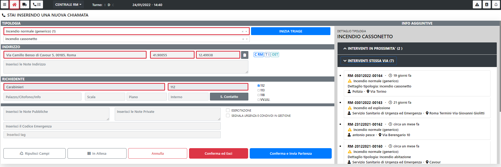
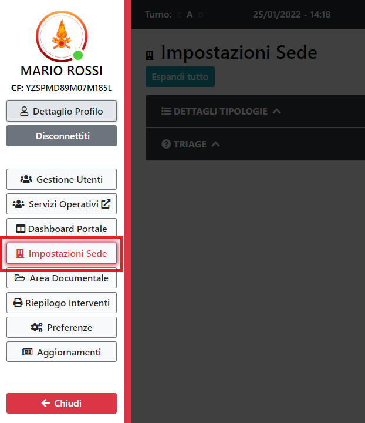

Introduzione a SO115Web
Introduzione a SO115Web
SO115Web ha lo scopo di gestire tutte le fasi del soccorso. Dalla registrazione di una chiamata di aiuto alla sua chiusura, dalla selezione di una squadra e del mezzo opportuno , all’uscita della partenza, all’aggiornamento di tutta l’evoluzione del soccorso.
SO115Web
Versione 1.0.0
Home Page
Questa è la pagina principale dell'applicazione, da qui è possibile gestire tutto il soccorso, dalla creazione di una Chiamata, alla composizione di una partenza, dalla gestione delle partenze alla chiusura dell'intervento.
Per accedere alla pagina si passa dal menu laterale e si clicca sull'apposito tasto:
Se si hanno 2 monitor con schermo espanso oppure uno schermo WideScreen la visualizzazione cambierà automaticamente adattandosi ai pixel a disposizione. La HomePage quindi si vedrà in questo modo. Sulla destra si vedrà l'area della sede di riferimento e se si seleziona una richiesta la mappa zooma automaticamente sull'intervento, inoltre se si hanno dei mezzi che si stanno portando sull'intervento si vedranno sulla mappa.
ATTENZIONE
Per poter creare una chiamata è necessario il ruolo di "Gestore Chiamate", per poter accedere alla funzionalità di Composizione Partenza è necessario il ruolo di "Gestore Richiesta".
Navbar
Dalla barra di navigazione è possibile spostarsi tra le diverse funzionalità dell'applicazione, in più è possibile spostarsi tra i diversi comandi, direzioni regionali e visualizzare le informazioni del CON.
Partendo da sinistra, le icone indicano:
- Icona Toast (Le tre righe orizzontali):
 Apre il menù laterale dal quale è possibile accedere alle funzioni di settings dell'applicazione
Apre il menù laterale dal quale è possibile accedere alle funzioni di settings dell'applicazione - Icona Home: Consente di tornare all'Home Page
- Icona APS: Consente di accedere alla funzionalità "Mezzi in servizio", dove si trova il riepilogo di tutti i mezzi in servizio nella sede selezionata e il loro stato
- Icona Cornetta: Consente di accedere alla funzionalità "Coda Chiamate", dove si trova il riepilogo di tutte le sedi al disotto dei quella selezionata
- Sede Selezionata: Indica la sede selezionata, premendo sul tasto è possibile spostarsi in altre sedi o selezionarne più di una
- Turno Corrente: Indica il turno corrente
- Data e ora: Indicano la data e l'ora correnti
- Icona Triangolo: Consente di accedere alla funzionalità "Gestione Emergenza", dalla quale è possibile creare e gestire un emergenza
- Icona Rubrica: Consente di accedere alla funzionalità "Rubrica"
- Icona Campanella:
 Segnala se per la sede selezionata ci sono segnalazioni particolari (Es. Un emergenza creata)
Segnala se per la sede selezionata ci sono segnalazioni particolari (Es. Un emergenza creata)
Box

Al di sotto della NavBar ci sono 4 Box che riepilogano la situazione attuale della sede selezionata. I quattro box rappresentano:
- La situazione degli interventi, divisi per: Chiamate, Assegnati, Presidiati, Sospesi
- La situazione del personale, diviso per: Squadre, Funzionari, Impiegate, Tecnico
- La situazione dei mezzi, divisi per: In sede, In viaggio, Sul Posto, In rientro

- Il meteo
Elenco Interventi
Sulla Home Page è presente l'elenco di tutte le chiamate e tutti gli interventi che si stanno svolgendo nella sede selezionata. La lista non ha un ordine casuale, ma presenta per prime le chiamate e a seguire gli interventi. Il loro stato è definito dal colore dell'intervento
Per ogni Chiamata/Intervento sono presenti dei tasti funzione sulla destra.

Questi Tasti indicano:
 Il numero di squadre impegnate sull'intervento, se si preme sul numero è possibile vedere le squadre impegnate
Il numero di squadre impegnate sull'intervento, se si preme sul numero è possibile vedere le squadre impegnate- Il numero di mezzi impegnati sull'interventi, se si preme sul numero è possible vedere i mezzi impegnati
- Il tasto per bloccare in alto l'intervento. Questo tasto è utile per bloccare la richiesta che si sta gestendo sempre all'inizio della lista.
 Il tasto quadrato: Questo tasto apre la maschera delle azioni possibili sull'intervento.
Il tasto quadrato: Questo tasto apre la maschera delle azioni possibili sull'intervento. Il tasto freccia in basso: Apre il dettaglio della chiamata/intervento
Il tasto freccia in basso: Apre il dettaglio della chiamata/intervento Il tasto modifica: Consente di modificare le informazioni dell'intervento
Il tasto modifica: Consente di modificare le informazioni dell'intervento- Il tasto freccia a destra: Apre la Composizione Partenza
Dettaglio Intervento Tramite il tasto "freccia in basso" è possibile aprire il dettaglio dell'intervento. Da questo dettaglio è possibile gestire le eventuali partenze presenti. E' possibile cambiare lo stato di una partenza, premendo sullo stato desiderato e indicando la data e l'ora nella quale, la partenza, ha assunto lo stato selezionato. E' anche possibile vedere i componenti di una squadra tramite il tasto lente a destra delle squadre.
Azioni
Premendo il tasto quadrato presente a destra di ogni intervento si apre una modale con le azioni possibili.
Azioni Chiamata

Se si seleziona una chiamata le azioni possibili saranno:
- Chiudere la chiamata
- Allertare un altro comando: Consente al comando allertato di poter inviare partenze sull'intervento, oltre alle partenze della sede principale
- Trasferimento: Consente il trasferimento della chiamata ad altro comando, a differenza dell'allerta, la gestione dell'intervento passa interamente al comando di destinazione
- Lista Eventi: Presenta l'elenco di tutti gli eventi che sono stati generati sull'intervento selezionato, in più presenta una sezione chiamata "LogBook" dove l'operatore può inserire dei propri appunti
- Sganciamento Mezzo: Da qui è possibile sganciare un mezzo da un altro intervento e farlo interventire sull'intervento selezionato
- Stampa Chiamata: Consente di stampare il dettaglio della chiamata
Azioni Intervento

Se si seleziona un intervento le azioni possibili sono simili a quelle di una chiamata, ma non sarà possibile trasferire l'intervento ad altro comando. In più è possibile:
- Aggiungere un ente intervenuto sull'intervento
- Aggiungere un fonogramma
Filtri
Al di sotto dei Box riepilogo sono presenti i filtri che interagiscono con la lista delle Chiamate/Interventi

Tramite la ricerca testuale è possibile ricercare un qualsiasi testo all'interno di tutte le richieste. Dal nome del richiedente, alla targa di un mezzo, al nome di una squadra

Tramite i filtri invece è possibile:
- Visualizzare solo le Chiamate
- Visualizzare solo gli Interventi
- Visualizzare sia Chiamate che Interventi
- Visualizzare gli interventi Chiusi indicando un lasso di tempo
- Visualizzare gli interventi che hanno un determinato stato: Assegnato, Sospeso o Presidiato
- Visualizzare le Chiamate Chiuse
Sganciamento
Qualora servisse un mezzo già impiegato su un altro intervento, è possible effettuare lo sganciamento.
Lo sganciamento è possibile farlo da 2 punti differenti:
Pannello AZIONI
Dal pannello delle azioni presenti sulla Home Page in ogni intervento selezionando il tasto apposito .
Una volta premuto il tasto si presenterà la modale con tutte le azioni possibili sull'intervento
Premendo sul tasto "Sganciamento Mezzo" si visualizzerà la lista di tutti i mezzi che risultano occupati.

Premendo il tasto "INFO" presente sulla destra di ogni mezzo, è possibile vedere il dettaglio della richiesta nella quale è impegnato il mezzo, a questo punto, se si ritiene opportuno, si preme il tasto "Conferma Sganciamento" e verrà creata una partenza nell'intervento sul quale si effettua l'azione e verrà chiusa la partenza nell'intervento precedente.

Composizione Partenza
Un altro funzionalità dal quale è possibile effettuare lo sganciamento è la composizione partenza.

Nella lista dei mezzi sono evidenziati i mezzi occupati, tramite un'icona apposta sulla sinistra di ogni mezzo.

Premendo su un mezzo occupato si aprirà il dettaglio dell'intervento sul quale è impiegato il mezzo
Da qui è possibile effettuare lo sganciamento premendo sul tasto "Conferma Sganciamento"
N.B. Se sull'intervento dal quale si sta togliendo la partenza era presente solo una partenza, l'intervento assumerà lo stato di sospeso
Sostituzione
SO115Web consente di effettuare la sostituzione tra due squadre sullo stesso mezzo. Per fare questa azione è necessario che due partenze, quella dal quale togliere la squadra e quella dal quale prendere quella nuova, si trovino sul posto dell'intervento.
In questa situazione comparirà una nuova icona in alto a sinistra della sezione delle partenze

Premendo questo tasto si aprira la procedura di sistituzione, la prima cosa da fare è selezionare il mezzo che contiene la squadra subentrante.

Il passo successivo è selezionare la squadra smontante.

L'ultimo passaggio è la conferma della sostituzione

N.B. Una volta confermata la sostituzione, la partenza contentene la squadra smontante, verrà messa in rientro.
Nuova Chiamata
Premendo sul tasto verde "Nuova Chiamata" presente in Home Page è possibile inserire una nuova chiamata.

Il form presenta i seguenti campi:
- Tipologia Intervento: Campo Obbligatorio
- Dettaglio Tipologia: Se presente è possibile selezionare un dettaglio per la tipologia selezionata
- Indirizzo intervento: Campo Obbligatorio
- Coordinate: E' un campo che viene riempito automaticamente quando si inserisce l'indirizzo, ma è comunque modificabile
- Note indirizzo: Campo libero
- Nominativo richiedente: Campo obbligatorio
- Telefono: Campo obbligatorio
- Palazzo/Scala/Interno/Citofono: campi non obbligatori
- Note Pubbliche: campo non obbligatoro
- Note Private: campo non obbligatoro
- Esercitazione: Indica se la chiamata che si sta registrando è per un'esercitazione
- Codice Emergenza: campo non obbligatoro
- Tag: Questa sezione è utile per la ricerca testuale presente in Home Page
N.B. Le coordinate definiscono le competenze.
N.B. Una volta inserito l'indirizzo, sulla destra, vengono presentate 2 sezioni: Interventi nelle vicinanze e Interventi sulla stessa via
N.B. Quando si seleziona un dettaglio tipologia, se presente, viene visualizzata la POS associata
N.B. Quando si seleziona un dettaglio tipologia, se presente, si abilita il tasto del TRIAGE
Una volta riempiti tutti i campi desiderati è possibile fare una delle seguenti azioni:
- "Ripulisci Campi": Azzera la form ripulendo tutti i campi precedentemente riempiti
- "In Attesa": Salva la chiamata ma rimane sulla form
- "Annulla": Permette di annullare l'inserimento della chiamata
- "Conferma ed esci": Permette di salvare la chiamata e tornare alla Home Page
- "Conferma ed invio partenza": Permette di salvare la chiamata ed andare direttamente alla composizione partenza
Schede Contatto
Premendo sul tasto apposito sulla Home Page si accede alla sezione delle Schede Contatto. In questa sezione sono raccolte tutte le schede contatto divise per: "Competenza", "Differibile", "Conoscenza"
Da questa sezione è possibile:
- Creare una nuova Chiamata premendo sul tasto verde con la freccia
- Impostare una scheda a "Gestita" premendo sul tasto giallo con l'ingranaggio
- Vedere il dettaglio della scheda contatto premendo sul tasto con la "i"
Se si hanno 2 monitor con schermo espanso oppure uno schermo WideScreen, la visualizzazione cambia, e sarà come l'immagine seguente

In basso a sinistra è presente il tasto "Raggruppa", con questo tasto è possibile raggruppare più schede contatto che fanno riferimento allo stesso intervento
Le schede contatto verranno raggruppatte sotto la prima scheda selezionata
Composizione Partenza
In Composizione Partenza è possibile assegnare una o più partenze sull'intervento.
La schermata è composta dal riassunto dell'intervento, dalla lista delle squadre disponibili, dalla lista dei mezzi disponibili e dal riassunto delle partenze già presenti sull'intervento.
Lista Squadre In automatico il sistema filtra le squadre delle tre competenze che sono state assegnate all'intervento. Questa selezione non è bloccante, se un operatore ha la necessità di selezionare squadre di altre competenze può scegliere se togliere i filtri delle competenze o aggiungere nei filtri le competenze desiderate.
Lista Mezzi L'ordine che viene presentato in automatico segue le seguenti regole:
- Vengono presentati i mezzi delle tre competenze dell'intervento
- L'ordine dei mezzi è per tipologia mezzo opportuno in base all'emergenza, distanza dall'intervento, minuti di percorrenza
Selezionando una squadra e un mezzo si forma automaticamente la partenza corrispondente.
A questo punto si può o aggiungere un'altra partenza premendo sul tasto  oppure premere su
oppure premere su  per confermare la partenza.
per confermare la partenza.
Se si ritiene opportuno far intervenire il soccorso aereo, si dovrà premere il tasto
. Da li si potrà selezionare la tipolgia di intervento e inserire una descrizione dello stesso
Qualora ci fosse un Triage sull'intervento, il tasto permetterà di consultarne il risultato.
E' anche possibile effettuare delle partenze utilizzando dei preaccoppiati. Per accedere alla funzionalità basta premere il tasto
e la schemata che si presenta è la seguente

Premendo il tasto
è possibile visualizzare sulla mappa il percorso di tutti i mezzi che stanno intervenendo sull'intervento.
N.B. Selezionando un mezzo, sulla mappa, viene visualizzato il percorso migliore per la tipolgia di mezzo, fino all'obiettivo.
Gestione Utenti
Gestione degli utenti dell'applicativo, e dei loro ruoli.
Per accedere alla pagina si passa dal menu laterale e si clicca sull'apposito tasto:

ATTENZIONE
Per accedere alla pagina e gestire gli utenti, è necessario il ruolo di amministratore.
Lista Utenti
In questa sezione vengono mostrati tutti gli utenti del sistema
E' possibile ricercare gli utenti per Sede o per Nome/Cognome tramite gli appositi filtri in alto a destra.

Modifica Utente
Nuovo Utente
E' possibile creare un nuovo utente tramite l'apposito tasto.

Si aprirà in seguito il pannello con i dati da inserire del nuovo utente.

Tra i dati da inserire, vanno specificati il nominativo, la sede a cui l'utente fa riferimento, il fatto se sia ricorsivo* o meno, e il ruolo che ha per la sede specificata
Il flag 'Ricorsivo', significa che l'utente assume il ruolo selezionato anche sui comandi o distaccamenti che fanno riferimento alla sede principale selezionata. (e.g. se assegno la sede Comando di Roma all'utente, e spunto il flag Ricorsivo, in automatico l'utente avrà lo stesso ruolo anche sui distaccamenti figli come Ladispoli o Anzio)
Elimina Utente
E' possibile eliminare un utente esistente tramite l'apposito tasto.

Ed in seguito confermare la scelta.

Aggiunta di un ruolo
E' possibile aggiungere un ruolo ad un utente esistente tramite l'apposito tasto.

Ed in seguito specificare gli stessi campi presenti anche in fase di "Nuovo Utente"

Cancellazione di un ruolo
E' possibile eliminare un ruolo ad un utente esistente tramite l'apposito tasto.
Ed in seguito confermare la scelta.

Impostazioni Sede
Impostazioni relative alla sede.
Per accedere alla pagina si passa dal menu laterale e si clicca sull'apposito tasto:

ATTENZIONE
Per accedere alla pagina e visualizzare le impostazioni della sede, è necessario il ruolo di amministratore.
Dettagli Tipologie
Impostazioni relative alla sede.
Per visualizzare la sezione dedicata ai Dettagli Tipologie si clicca sull'apposito tasto:
ATTENZIONE
Per accedere alla sezione dei Dettagli Tipologie, è necessario il ruolo di amministratore.
Lista Dettagli Tipologie
In questa sezione vengono mostrati tutti i Dettagli Tipologie creati per la sede
E' possibile ricercare i Dettagli Tipologie per Tipologia o per Nome tramite gli appositi filtri in alto a destra.
Nuovo Dettaglio Tipologia
E' possibile creare un nuovo Dettaglio Tipologia tramite l'apposito tasto.

Si aprirà in seguito il pannello con i dati da inserire del nuovo Dettaglio Tipologia.
Tra i dati da inserire, vanno specificati la tipologia al quale associarlo e il nome che gli si vuole assegnare.
Nuovo Dettaglio Tipologia
E' possibile modificare un Dettaglio Tipologia tramite l'apposito tasto.

Si aprirà il seguente pannello.
Tra i dati che è possibile modificare troviamo la Tipologia al quale è associato e il nome del Dettaglio Tipologia.
Elimina Dettaglio Tipologia
E' possibile eliminare un Dettaglio Tipologia tramite l'apposito tasto.
Ed in seguito confermare la scelta.

Triage
Ricerca e modifica del Triage.
Per visualizzare la sezione dedicata al Triage si clicca sull'apposito tasto:

ATTENZIONE
Per accedere alla sezione del Triage, è necessario il ruolo di amministratore.
Ricerca Triage
Per ricercare un Triage selezionare una Tipologia dalla lista, di seguito selezionare un Dettaglio Tipologia dalla lista, poi premere il pulsante di ricerca.
A questo punto verrà visualizzato il Triage richiesto, se disponibile.

Se il Triage non è disponibile verrà mostrato un messaggio di errore e sarà possibile crearlo. (Vedi capitolo 6.2.2 "Creazione Triage" oppure capitolo 6.2.3 "Importazione Triage")
Per effettuare una nuova ricerca premere sul pulsante "Nuova Ricerca".

Creazione Triage
Per creare un Triage premere il pulsante "Prima Domanda".

A questo punto scrivere il testo della domanda che si vuole aggiungere.

Se si vogliono personalizzare le risposte selezionare la voce "Risposte Personalizzate".

A questo punto possiamo personalizzare le risposto e/o aggiungerne delle altre tramite l'apposito pulsante.

Una volta inseriti i dati che si vogliono basterà premere il pulsante di conferma.

Salviamo i dati inseriti tramite l'apposito pulsante di salvataggio.

Importazione Triage
Per importare un Triage premere il pulsante "Importa Triage da un altro Dettaglio Tipologia".

A questo punto selezionare il Dettaglio Tipologia da cui importare il triage e premere "Conferma".

Se il Dettaglio Tipologia da cui si vuole importare il Triage ne ha uno disponibile, verrà importato e salvato automaticamente.
Altrimenti verrà mostrato un errore.
Modifica Triage
Per modificare un Triage selezionare "Abilita Modifica".

Questo abiliterà la modalità di modifica del Triage.
Per modificare il testo di una domanda bisogna premere il pulsante "Modifica" di fianco alla domanda che vogliamo modificare.

Per confermare la modifica selezionare il pulsante dedicato.

Altrimenti per annullare la modifica selezionare il seguente pulsante.

Altrimenti per annullare la modifica selezionare il seguente pulsante.
Per aggiungere una domanda consecutiva ad una risposta premere sul pulsante di fianco alla risposta scelta.

A questo punto apparirà una finestra nel quale possiamo inserire la domanda seguente alla risposta scelta ed altre informazioni.

Una volta inserite le informazioni premere sul pulsante di conferma.

A questo punto ci verrà mostrato il risultato e sarà necessario salvare tramite l'apposito pulsante.